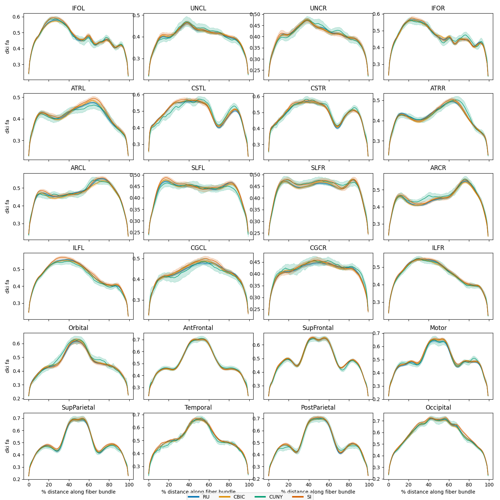

Note
Click here to download the full example code
Harmonize HBN data using ComBat
This example loads AFQ data from the Healthy Brain Network (HBN) preprocessed diffusion derivatives 1. The HBN is a landmark pediatric mental health study. Over the course of the study, it will collect diffusion MRI data from approximately 5,000 children and adolescents. We recently processed the available data from over 2,000 of these subjects, and provide the tract profiles from this dataset, which can be downloaded from AWS thanks to [INDI](http://fcon_1000.projects.nitrc.org/).
We first load the data by using the AFQDataset.from_files() static method
and supplying AWS S3 URIs instead of local file names. We then impute missing
values and plot the mean bundle profiles by scanning site, noting that there are
substantial site differences. Lastly, we harmonize the site differences using
NeuroComBat 2 and plot the harmonized bundle profiles to verify that the site
differences have been removed.
- 1
Adam Richie-Halford, Matthew Cieslak, Lei Ai, Sendy Caffarra, Sydney Covitz, Alexandre R. Franco, Iliana I. Karipidis, John Kruper, Michael Milham, Bárbara Avelar-Pereira, Ethan Roy, Valerie J. Sydnor, Jason Yeatman, The Fibr Community Science Consortium, Theodore D. Satterthwaite, and Ariel Rokem, “An open, analysis-ready, and quality controlled resource for pediatric brain white-matter research” bioRxiv 2022.02.24.481303; doi: https://doi.org/10.1101/2022.02.24.481303
- 2
Jean-Philippe Fortin, Drew Parker, Birkan Tunc, Takanori Watanabe, Mark A Elliott, Kosha Ruparel, David R Roalf, Theodore D Satterthwaite, Ruben C Gur, Raquel E Gur, Robert T Schultz, Ragini Verma, Russell T Shinohara. “Harmonization Of Multi-Site Diffusion Tensor Imaging Data” NeuroImage, 161, 149-170, 2017; doi: https://doi.org/10.1016/j.neuroimage.2017.08.047
import numpy as np
from afqinsight import AFQDataset
from afqinsight.plot import plot_tract_profiles
from neurocombat_sklearn import CombatModel
from sklearn.impute import SimpleImputer
from sklearn.model_selection import train_test_split
Fetch the HBN data
As a shortcut, we have incorporated a few studies into the software. In these
cases, a AFQDataset class instance can be initialized using the
AFQDataset.from_study() static method. This expects the name of one of
the studies that are supported (see the method documentation for the list of
these studies). By passing “hbn”, we request that the object download the
HBN dataset from the AWS Open Data program where it has been stored and
initialize the objects with the subjects and nodes information. Subjects’ age
is set as the target variable. After dropping subjects that don’t have their
age recorded, there are 1867 subjects in the dataset.
subjects.tsv: 0%| | 0.00/211k [00:00<?, ?iB/s]
subjects.tsv: 50%|##### | 105k/211k [00:00<00:00, 1.02MiB/s]
subjects.tsv: 100%|##########| 211k/211k [00:00<00:00, 1.50MiB/s]
nodes.csv: 0%| | 0.00/543M [00:00<?, ?iB/s]
nodes.csv: 0%| | 101k/543M [00:00<09:33, 946kiB/s]
nodes.csv: 0%| | 836k/543M [00:00<02:04, 4.36MiB/s]
nodes.csv: 1%|1 | 5.61M/543M [00:00<00:23, 23.3MiB/s]
nodes.csv: 2%|2 | 12.4M/543M [00:00<00:13, 40.3MiB/s]
nodes.csv: 3%|3 | 18.8M/543M [00:00<00:10, 48.6MiB/s]
nodes.csv: 5%|4 | 25.6M/543M [00:00<00:09, 55.2MiB/s]
nodes.csv: 6%|6 | 32.8M/543M [00:00<00:08, 60.8MiB/s]
nodes.csv: 7%|7 | 39.8M/543M [00:00<00:07, 63.6MiB/s]
nodes.csv: 9%|8 | 47.0M/543M [00:00<00:07, 66.3MiB/s]
nodes.csv: 10%|# | 54.3M/543M [00:01<00:07, 68.3MiB/s]
nodes.csv: 11%|#1 | 61.3M/543M [00:01<00:06, 68.9MiB/s]
nodes.csv: 13%|#2 | 68.3M/543M [00:01<00:06, 69.0MiB/s]
nodes.csv: 14%|#3 | 75.2M/543M [00:01<00:06, 69.1MiB/s]
nodes.csv: 15%|#5 | 82.9M/543M [00:01<00:06, 71.4MiB/s]
nodes.csv: 17%|#6 | 90.5M/543M [00:01<00:06, 72.9MiB/s]
nodes.csv: 18%|#8 | 98.5M/543M [00:01<00:05, 75.2MiB/s]
nodes.csv: 20%|#9 | 106M/543M [00:01<00:05, 75.4MiB/s]
nodes.csv: 21%|## | 114M/543M [00:01<00:05, 74.4MiB/s]
nodes.csv: 22%|##2 | 121M/543M [00:01<00:05, 74.4MiB/s]
nodes.csv: 24%|##3 | 129M/543M [00:02<00:05, 74.0MiB/s]
nodes.csv: 25%|##5 | 136M/543M [00:02<00:05, 72.6MiB/s]
nodes.csv: 26%|##6 | 143M/543M [00:02<00:05, 72.8MiB/s]
nodes.csv: 28%|##7 | 151M/543M [00:02<00:05, 71.1MiB/s]
nodes.csv: 29%|##9 | 158M/543M [00:02<00:05, 70.2MiB/s]
nodes.csv: 30%|### | 165M/543M [00:02<00:05, 69.9MiB/s]
nodes.csv: 32%|###1 | 172M/543M [00:02<00:05, 70.1MiB/s]
nodes.csv: 33%|###3 | 179M/543M [00:02<00:05, 70.4MiB/s]
nodes.csv: 34%|###4 | 187M/543M [00:02<00:04, 72.5MiB/s]
nodes.csv: 36%|###5 | 194M/543M [00:02<00:04, 70.7MiB/s]
nodes.csv: 37%|###7 | 202M/543M [00:03<00:04, 72.4MiB/s]
nodes.csv: 39%|###8 | 209M/543M [00:03<00:04, 72.2MiB/s]
nodes.csv: 40%|###9 | 217M/543M [00:03<00:04, 73.0MiB/s]
nodes.csv: 41%|####1 | 224M/543M [00:03<00:04, 73.3MiB/s]
nodes.csv: 43%|####2 | 232M/543M [00:03<00:04, 73.6MiB/s]
nodes.csv: 44%|####4 | 239M/543M [00:03<00:04, 73.1MiB/s]
nodes.csv: 45%|####5 | 246M/543M [00:03<00:04, 73.1MiB/s]
nodes.csv: 47%|####6 | 254M/543M [00:03<00:04, 71.9MiB/s]
nodes.csv: 48%|####8 | 261M/543M [00:03<00:03, 72.8MiB/s]
nodes.csv: 49%|####9 | 269M/543M [00:03<00:03, 72.8MiB/s]
nodes.csv: 51%|##### | 276M/543M [00:04<00:03, 70.7MiB/s]
nodes.csv: 52%|#####2 | 283M/543M [00:04<00:03, 70.0MiB/s]
nodes.csv: 53%|#####3 | 290M/543M [00:04<00:03, 69.5MiB/s]
nodes.csv: 55%|#####4 | 297M/543M [00:04<00:03, 68.2MiB/s]
nodes.csv: 56%|#####6 | 304M/543M [00:04<00:03, 68.3MiB/s]
nodes.csv: 57%|#####7 | 312M/543M [00:04<00:03, 70.2MiB/s]
nodes.csv: 59%|#####8 | 319M/543M [00:04<00:03, 69.2MiB/s]
nodes.csv: 60%|#####9 | 326M/543M [00:04<00:03, 67.9MiB/s]
nodes.csv: 61%|######1 | 332M/543M [00:04<00:03, 67.5MiB/s]
nodes.csv: 62%|######2 | 339M/543M [00:05<00:03, 67.4MiB/s]
nodes.csv: 64%|######3 | 346M/543M [00:05<00:02, 67.8MiB/s]
nodes.csv: 65%|######5 | 354M/543M [00:05<00:02, 70.9MiB/s]
nodes.csv: 67%|######6 | 361M/543M [00:05<00:02, 71.3MiB/s]
nodes.csv: 68%|######7 | 369M/543M [00:05<00:02, 72.1MiB/s]
nodes.csv: 69%|######9 | 376M/543M [00:05<00:02, 69.0MiB/s]
nodes.csv: 70%|####### | 383M/543M [00:05<00:02, 67.0MiB/s]
nodes.csv: 72%|#######1 | 389M/543M [00:05<00:02, 66.4MiB/s]
nodes.csv: 73%|#######3 | 397M/543M [00:05<00:02, 69.8MiB/s]
nodes.csv: 75%|#######4 | 405M/543M [00:05<00:01, 72.4MiB/s]
nodes.csv: 76%|#######6 | 414M/543M [00:06<00:01, 75.3MiB/s]
nodes.csv: 78%|#######7 | 421M/543M [00:06<00:01, 75.1MiB/s]
nodes.csv: 79%|#######9 | 429M/543M [00:06<00:01, 76.7MiB/s]
nodes.csv: 80%|######## | 437M/543M [00:06<00:01, 76.4MiB/s]
nodes.csv: 82%|########1 | 445M/543M [00:06<00:01, 77.4MiB/s]
nodes.csv: 83%|########3 | 453M/543M [00:06<00:01, 78.6MiB/s]
nodes.csv: 85%|########4 | 461M/543M [00:06<00:01, 78.7MiB/s]
nodes.csv: 86%|########6 | 469M/543M [00:06<00:00, 79.1MiB/s]
nodes.csv: 88%|########7 | 477M/543M [00:06<00:00, 78.7MiB/s]
nodes.csv: 89%|########9 | 485M/543M [00:06<00:00, 78.8MiB/s]
nodes.csv: 91%|######### | 493M/543M [00:07<00:00, 78.4MiB/s]
nodes.csv: 92%|#########2| 500M/543M [00:07<00:00, 78.2MiB/s]
nodes.csv: 94%|#########3| 508M/543M [00:07<00:00, 78.7MiB/s]
nodes.csv: 95%|#########5| 516M/543M [00:07<00:00, 78.3MiB/s]
nodes.csv: 97%|#########6| 524M/543M [00:07<00:00, 78.0MiB/s]
nodes.csv: 98%|#########7| 532M/543M [00:07<00:00, 78.0MiB/s]
nodes.csv: 99%|#########9| 540M/543M [00:07<00:00, 78.3MiB/s]
nodes.csv: 100%|##########| 543M/543M [00:07<00:00, 70.5MiB/s]
AFQDataset(n_samples=1867, n_features=4800, n_targets=3, targets=['age', 'sex', 'scan_site_id'])
Train / test split
We can pass the AFQDataset class instance to scikit-learn’s
train_test_split() function, just as we would with an array.
dataset_train, dataset_test = train_test_split(dataset, test_size=0.5)
Impute missing values
Next we impute missing values using median imputation. We fit the imputer using the training set and then use it to transform both the training and test sets.
imputer = dataset_train.model_fit(SimpleImputer(strategy="median"))
dataset_train = dataset_train.model_transform(imputer)
dataset_test = dataset_test.model_transform(imputer)
Plot average bundle profiles by scan site
Next we plot the mean bundle profiles in the test set by scanning site. The
plot_tract_profiles() function takes as input an AFQDataset and
returns matplotlib figures displaying the mean bundle profile for each bundle
and metric, optionally grouped by a categorical or continuous variable.
site_figs = plot_tract_profiles(
X=dataset_test,
group_by=dataset_test.classes["scan_site_id"][dataset_test.y[:, 2].astype(int)],
group_by_name="Site",
figsize=(14, 14),
)

0%| | 0/2 [00:00<?, ?it/s]
0%| | 0/24 [00:00<?, ?it/s]
4%|4 | 1/24 [00:04<01:42, 4.46s/it]
8%|8 | 2/24 [00:08<01:38, 4.48s/it]
12%|#2 | 3/24 [00:13<01:33, 4.46s/it]
17%|#6 | 4/24 [00:17<01:29, 4.46s/it]
21%|## | 5/24 [00:22<01:24, 4.44s/it]
25%|##5 | 6/24 [00:26<01:20, 4.45s/it]
29%|##9 | 7/24 [00:31<01:16, 4.47s/it]
33%|###3 | 8/24 [00:35<01:11, 4.48s/it]
38%|###7 | 9/24 [00:40<01:07, 4.48s/it]
42%|####1 | 10/24 [00:44<01:02, 4.48s/it]
46%|####5 | 11/24 [00:49<00:58, 4.53s/it]
50%|##### | 12/24 [00:54<00:55, 4.60s/it]
54%|#####4 | 13/24 [00:58<00:50, 4.57s/it]
58%|#####8 | 14/24 [01:03<00:45, 4.55s/it]
62%|######2 | 15/24 [01:07<00:40, 4.53s/it]
67%|######6 | 16/24 [01:12<00:36, 4.56s/it]
71%|####### | 17/24 [01:16<00:32, 4.57s/it]
75%|#######5 | 18/24 [01:21<00:27, 4.54s/it]
79%|#######9 | 19/24 [01:25<00:22, 4.53s/it]
83%|########3 | 20/24 [01:30<00:18, 4.53s/it]
88%|########7 | 21/24 [01:35<00:13, 4.65s/it]
92%|#########1| 22/24 [01:40<00:09, 4.71s/it]
96%|#########5| 23/24 [01:45<00:04, 4.80s/it]
100%|##########| 24/24 [01:49<00:00, 4.80s/it]
100%|##########| 24/24 [01:49<00:00, 4.58s/it]
50%|##### | 1/2 [01:50<01:50, 110.85s/it]
0%| | 0/24 [00:00<?, ?it/s]
4%|4 | 1/24 [00:04<01:49, 4.74s/it]
8%|8 | 2/24 [00:09<01:46, 4.84s/it]
12%|#2 | 3/24 [00:14<01:41, 4.81s/it]
17%|#6 | 4/24 [00:19<01:36, 4.80s/it]
21%|## | 5/24 [00:23<01:31, 4.79s/it]
25%|##5 | 6/24 [00:28<01:23, 4.66s/it]
29%|##9 | 7/24 [00:32<01:17, 4.59s/it]
33%|###3 | 8/24 [00:37<01:12, 4.54s/it]
38%|###7 | 9/24 [00:41<01:07, 4.50s/it]
42%|####1 | 10/24 [00:46<01:03, 4.52s/it]
46%|####5 | 11/24 [00:50<00:58, 4.50s/it]
50%|##### | 12/24 [00:55<00:53, 4.49s/it]
54%|#####4 | 13/24 [00:59<00:48, 4.45s/it]
58%|#####8 | 14/24 [01:03<00:44, 4.45s/it]
62%|######2 | 15/24 [01:08<00:40, 4.46s/it]
67%|######6 | 16/24 [01:12<00:35, 4.48s/it]
71%|####### | 17/24 [01:17<00:31, 4.48s/it]
75%|#######5 | 18/24 [01:21<00:26, 4.47s/it]
79%|#######9 | 19/24 [01:26<00:22, 4.47s/it]
83%|########3 | 20/24 [01:30<00:17, 4.49s/it]
88%|########7 | 21/24 [01:35<00:13, 4.52s/it]
92%|#########1| 22/24 [01:40<00:09, 4.54s/it]
96%|#########5| 23/24 [01:44<00:04, 4.55s/it]
100%|##########| 24/24 [01:49<00:00, 4.56s/it]
100%|##########| 24/24 [01:49<00:00, 4.55s/it]
100%|##########| 2/2 [03:40<00:00, 110.42s/it]
100%|##########| 2/2 [03:40<00:00, 110.48s/it]
Harmonize the sites and replot
We can see that there are substantial scan site differences in both the FA and MD profiles. Let’s use neuroComBat to harmonize the site differences and then replot the mean bundle profiles.
N.B. We use the excellent neurocombat_sklearn package to apply ComBat to
our data. We love this library, however, it is not fully compliant with the
scikit-learn transformer API, so we cannot use the
AFQDataset.model_fit_transform() method to apply this transformer to our
dataset. No problem! We can simply copy the unharmonized dataset into a new
variable and then overwrite the features of the new dataset with the ComBat
output.
Lastly, we replot the mean bundle profiles and confirm that ComBat did its job.
# Fit the ComBat transformer to the training set
combat = CombatModel()
combat.fit(
dataset_train.X,
dataset_train.y[:, 2][:, np.newaxis],
dataset_train.y[:, 1][:, np.newaxis],
dataset_train.y[:, 0][:, np.newaxis],
)
# And then transform a copy of the test set
harmonized_test = dataset_test.copy()
harmonized_test.X = combat.transform(
dataset_test.X,
dataset_test.y[:, 2][:, np.newaxis],
dataset_test.y[:, 1][:, np.newaxis],
dataset_test.y[:, 0][:, np.newaxis],
)
site_figs = plot_tract_profiles(
X=harmonized_test,
group_by=harmonized_test.classes["scan_site_id"][
harmonized_test.y[:, 2].astype(int)
],
group_by_name="Site",
figsize=(14, 14),
)
- 

0%| | 0/2 [00:00<?, ?it/s]
0%| | 0/24 [00:00<?, ?it/s]
4%|4 | 1/24 [00:04<01:47, 4.66s/it]
8%|8 | 2/24 [00:09<01:41, 4.61s/it]
12%|#2 | 3/24 [00:13<01:36, 4.59s/it]
17%|#6 | 4/24 [00:18<01:32, 4.63s/it]
21%|## | 5/24 [00:23<01:28, 4.68s/it]
25%|##5 | 6/24 [00:28<01:25, 4.73s/it]
29%|##9 | 7/24 [00:33<01:21, 4.79s/it]
33%|###3 | 8/24 [00:37<01:16, 4.78s/it]
38%|###7 | 9/24 [00:42<01:11, 4.75s/it]
42%|####1 | 10/24 [00:47<01:05, 4.70s/it]
46%|####5 | 11/24 [00:51<01:00, 4.64s/it]
50%|##### | 12/24 [00:56<00:55, 4.64s/it]
54%|#####4 | 13/24 [01:00<00:50, 4.63s/it]
58%|#####8 | 14/24 [01:05<00:45, 4.59s/it]
62%|######2 | 15/24 [01:09<00:41, 4.57s/it]
67%|######6 | 16/24 [01:14<00:36, 4.57s/it]
71%|####### | 17/24 [01:18<00:31, 4.56s/it]
75%|#######5 | 18/24 [01:23<00:27, 4.57s/it]
79%|#######9 | 19/24 [01:28<00:22, 4.57s/it]
83%|########3 | 20/24 [01:32<00:18, 4.57s/it]
88%|########7 | 21/24 [01:37<00:13, 4.64s/it]
92%|#########1| 22/24 [01:42<00:09, 4.74s/it]
96%|#########5| 23/24 [01:47<00:04, 4.84s/it]
100%|##########| 24/24 [01:52<00:00, 4.91s/it]
100%|##########| 24/24 [01:52<00:00, 4.69s/it]
50%|##### | 1/2 [01:53<01:53, 113.58s/it]
0%| | 0/24 [00:00<?, ?it/s]
4%|4 | 1/24 [00:05<01:55, 5.04s/it]
8%|8 | 2/24 [00:10<01:52, 5.10s/it]
12%|#2 | 3/24 [00:15<01:45, 5.04s/it]
17%|#6 | 4/24 [00:19<01:39, 4.95s/it]
21%|## | 5/24 [00:24<01:31, 4.81s/it]
25%|##5 | 6/24 [00:29<01:24, 4.71s/it]
29%|##9 | 7/24 [00:33<01:18, 4.64s/it]
33%|###3 | 8/24 [00:38<01:13, 4.61s/it]
38%|###7 | 9/24 [00:42<01:10, 4.69s/it]
42%|####1 | 10/24 [00:47<01:05, 4.68s/it]
46%|####5 | 11/24 [00:52<01:00, 4.62s/it]
50%|##### | 12/24 [00:56<00:54, 4.58s/it]
54%|#####4 | 13/24 [01:01<00:50, 4.59s/it]
58%|#####8 | 14/24 [01:05<00:45, 4.57s/it]
62%|######2 | 15/24 [01:10<00:41, 4.58s/it]
67%|######6 | 16/24 [01:14<00:36, 4.54s/it]
71%|####### | 17/24 [01:19<00:31, 4.52s/it]
75%|#######5 | 18/24 [01:23<00:27, 4.50s/it]
79%|#######9 | 19/24 [01:28<00:22, 4.53s/it]
83%|########3 | 20/24 [01:33<00:18, 4.59s/it]
88%|########7 | 21/24 [01:38<00:14, 4.72s/it]
92%|#########1| 22/24 [01:42<00:09, 4.79s/it]
96%|#########5| 23/24 [01:48<00:04, 4.86s/it]
100%|##########| 24/24 [01:53<00:00, 4.94s/it]
100%|##########| 24/24 [01:53<00:00, 4.71s/it]
100%|##########| 2/2 [03:47<00:00, 113.97s/it]
100%|##########| 2/2 [03:47<00:00, 113.91s/it]
Total running time of the script: ( 8 minutes 7.570 seconds)